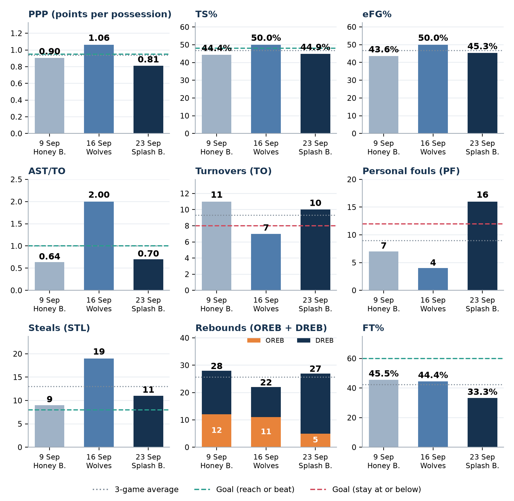
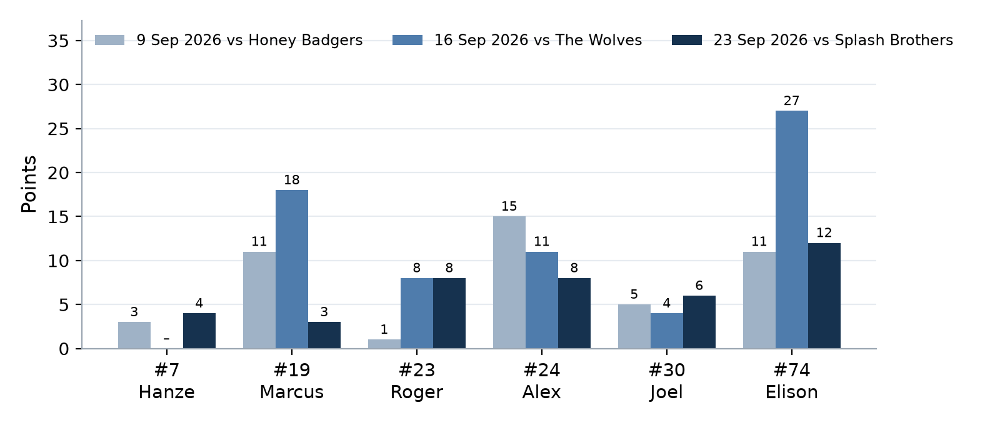
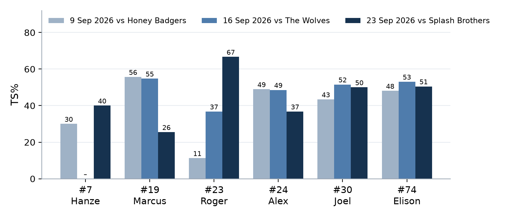
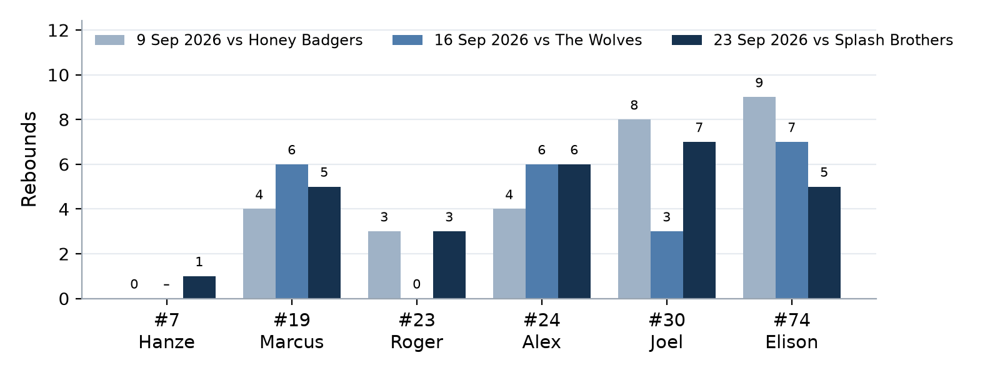
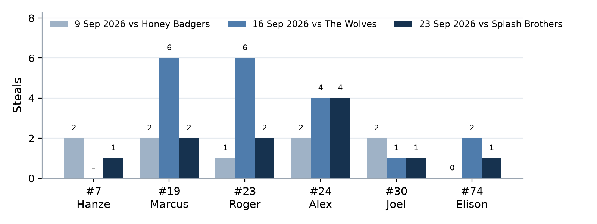
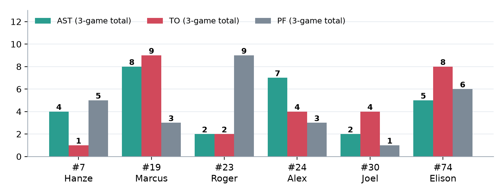
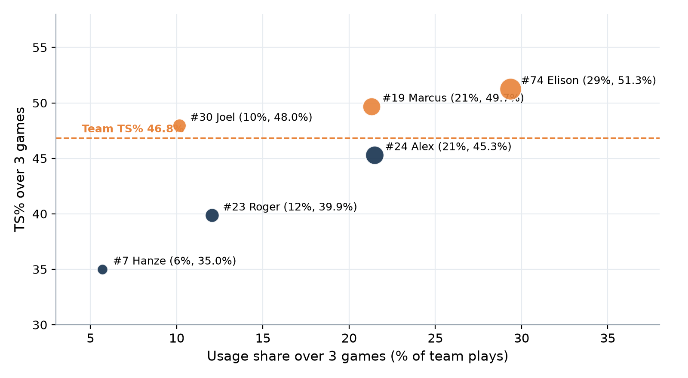

Three-Game Review
| 3 | – | 0 |
| Wins | Losses |
Three-game box score review · Trends, player totals and averages, progress vs targets
1Three games at a glance
Four big messages
- Opponents scored 29, 34 and 23: about 0.52 points per possession over three games, and never above 0.57 in any game.
- 39 steals (13 a game). All six players with stats have steals; five had at least one in every game they played.
- PPP 0.90 → 1.06 → 0.81; AST/TO 0.64 → 2.00 → 0.70. The Wolves game shows what we can do when we share the ball.
- Biggest swing: inside finishing (2P 28.6% → 50% → 50%) improved and stayed up, but 3PT went 58% → 33% → 23%.
- 11-26 (42.3%) over three games, and below 50% in every game. At 60%, that's about 5 more points from the same trips.
- We also get to the line less now: FT rate 23.4% → 14.1% → 14.0%.
- Fouls 7 → 4 → 16 and turnovers 11 → 7 → 10. Offensive rebounds dropped 12 → 11 → 5.
- Against stronger teams, these swings will decide close games.
2Team trends across the three games
Bars show each game; dotted line = 3-game average; dashed line = our team target (teal: reach or beat it; red: stay at or below it). 16 Sep uses the box-score 68 points (official 63: PPP 0.98, TS% 46.4%).

| Team stat | 9 Sep Honey Badgers | 16 Sep The Wolves | 23 Sep Splash Brothers | 3 games (totals / overall) |
|---|---|---|---|---|
| Points (box score) | 46 | 68 | 41 | 155 |
| Opponent points | 29 | 34 | 23 | 86 |
| Est. possessions | 50.8 | 64.0 | 50.6 | 165.4 |
| PPP | 0.90 | 1.06 | 0.81 | 0.94 |
| Opponent PPP (est.) | 0.57 | 0.53 | 0.45 | 0.52 |
| TS% | 44.4% | 50.0% | 44.9% | 46.8% |
| eFG% | 43.6% | 50.0% | 45.3% | 46.8% |
| 2P | 10-35 (28.6%) | 23-46 (50.0%) | 15-30 (50.0%) | 48-111 (43.2%) |
| 3P | 7-12 (58.3%) | 6-18 (33.3%) | 3-13 (23.1%) | 16-43 (37.2%) |
| FT | 5-11 (45.5%) | 4-9 (44.4%) | 2-6 (33.3%) | 11-26 (42.3%) |
| FT rate | 23.4% | 14.1% | 14.0% | 16.9% |
| AST · TO | 7 · 11 | 14 · 7 | 7 · 10 | 28 · 28 |
| AST/TO | 0.64 | 2.00 | 0.70 | 1.00 |
| TO rate | 21.6% | 10.9% | 19.7% | 16.9% |
| OREB · DREB · REB | 12 · 16 · 28 | 11 · 11 · 22 | 5 · 22 · 27 | 28 · 49 · 77 |
| OREB ÷ our misses | 40.0% | 31.4% | 20.0% | 31.1% |
| STL · BLK | 9 · 0 | 19 · 0 | 11 · 1 | 39 · 1 |
| PF | 7 | 4 | 16 | 27 |
2.1What the trends say
- Defence: steady and strong. Opponent PPP 0.57 → 0.53 → 0.45: our defence got better every week.
- Efficiency (PPP, TS%, eFG%): one high, two average. TS% was 44–45% in two games and 50% against the Wolves. Over three games: TS% 46.8%, PPP 0.94.
- Inside finishing improved and held: 2P% 28.6% → 50.0% → 50.0%. Three-point shooting cooled: 58.3% → 33.3% → 23.1% (16-43, 37.2% overall is still good).
- Free throws never got going: 45.5% → 44.4% → 33.3%, and fewer trips to the line after game 1.
- Ball care follows ball movement: our best AST/TO (2.00, 14 AST) came in our best offensive game. In the other two we had more TO than AST.
- Fouls: very disciplined for two games (7, 4), then 16. That's the number to watch next game.
- Rebounding: total REB stayed 22–28, but the mix changed: OREB fell 12 → 11 → 5 while DREB swung 16 → 11 → 22.
3Progress vs our team targets
We used the same 11 targets in every game report. Here's how often we hit each one.
| Team target | 9 Sep | 16 Sep | 23 Sep | |
|---|---|---|---|---|
| PPP (points per possession) | ≥ 0.95 | 0.90 ✗ | 1.06 ✓ | 0.81 ✗ |
| TS% (true shooting) | ≥ 48% | 44.4% ✗ | 50.0% ✓ | 44.9% ✗ |
| 2P% (finishing inside the arc) | ≥ 45% | 28.6% ✗ | 50.0% ✓ | 50.0% ✓ |
| FT% (free throws) | ≥ 60% | 45.5% ✗ | 44.4% ✗ | 33.3% ✗ |
| Turnovers (TO) | ≤ 8 | 11 ✗ | 7 ✓ | 10 ✗ |
| AST/TO | ≥ 1.00 | 0.64 ✗ | 2.00 ✓ | 0.70 ✗ |
| Personal fouls (PF) | ≤ 12 | 7 ✓ | 4 ✓ | 16 ✗ |
| Steals (STL) | ≥ 8 | 9 ✓ | 19 ✓ | 11 ✓ |
| Offensive rebounds (OREB) | ≥ 8 | 12 ✓ | 11 ✓ | 5 ✗ |
| Defensive rebounds (DREB) | ≥ 15 | 16 ✓ | 11 ✗ | 22 ✓ |
| Opponent PPP (est.) | ≤ 0.65 | 0.57 ✓ | 0.53 ✓ | 0.45 ✓ |
| Targets hit | 5 / 11 | 9 / 11 | 4 / 11 |
- Steals (STL)
- Opponent PPP (est.)
These are habits now. Keep them.
- FT% (free throws)
Our clearest next step as a team.
- 9 of 11 against the Wolves shows the targets are realistic for this team. They're not out of reach.
- 5 → 9 → 4 targets hit: the problem isn't ability, it's doing it every game. Consistency is the goal.
- The targets most likely to swing a close game: turnovers, AST/TO, fouls and free throws. Three of the four were missed on 23 Sep.
4Players: 3-game totals, averages and trends
| Player | GP | PTS | FG | 3P | FT | REB | AST | STL | TO | PF | TS% | Usage |
|---|---|---|---|---|---|---|---|---|---|---|---|---|
| #7 Hanze | 2 | 7 | 3-10 | 1-5 | 0-0 | 1 | 4 | 3 | 1 | 5 | 35.0% | 5.7% |
| #19 Marcus | 3 | 32 | 12-30 | 5-14 | 3-5 | 15 | 8 | 10 | 9 | 3 | 49.7% | 21.3% |
| #23 Roger | 3 | 17 | 7-20 | 2-6 | 1-3 | 6 | 2 | 9 | 2 | 9 | 39.9% | 12.1% |
| #24 Alex | 3 | 34 | 12-34 | 7-15 | 3-8 | 16 | 7 | 10 | 4 | 3 | 45.3% | 21.5% |
| #30 Joel | 3 | 15 | 6-13 | 0-0 | 3-6 | 18 | 2 | 4 | 4 | 1 | 48.0% | 10.2% |
| #74 Elison | 3 | 50 | 24-47 | 1-3 | 1-4 | 21 | 5 | 3 | 8 | 6 | 51.3% | 29.3% |
| Team | 3 | 155 | 64-154 | 16-43 | 11-26 | 77 | 28 | 39 | 28 | 27 | 46.8% | 100% |
| Player | GP | PTS | FGA | REB | OREB | AST | STL | TO | PF | AST/TO |
|---|---|---|---|---|---|---|---|---|---|---|
| #7 Hanze | 2 | 3.5 | 5.0 | 0.5 | 0.0 | 2.0 | 1.5 | 0.5 | 2.5 | 4.00 |
| #19 Marcus | 3 | 10.7 | 10.0 | 5.0 | 2.3 | 2.7 | 3.3 | 3.0 | 1.0 | 0.89 |
| #23 Roger | 3 | 5.7 | 6.7 | 2.0 | 0.0 | 0.7 | 3.0 | 0.7 | 3.0 | 1.00 |
| #24 Alex | 3 | 11.3 | 11.3 | 5.3 | 3.3 | 2.3 | 3.3 | 1.3 | 1.0 | 1.75 |
| #30 Joel | 3 | 5.0 | 4.3 | 6.0 | 1.3 | 0.7 | 1.3 | 1.3 | 0.3 | 0.50 |
| #74 Elison | 3 | 16.7 | 15.7 | 7.0 | 2.3 | 1.7 | 1.0 | 2.7 | 2.0 | 0.62 |
| Team | 3 | 51.7 | 51.3 | 25.7 | 9.3 | 9.3 | 13.0 | 9.3 | 9.0 | 1.00 |
GP = games with at least one recorded stat. #7 Hanze has no record on 16 Sep, so his averages are over 2 games. #17 Ryan has no recorded stats in any of the three box scores; he most likely didn't get on court, or only briefly (minutes aren't recorded). That's not a judgement on him, so he isn't in the tables or charts. Box-score points total 155 (16 Sep counted as 68).






- Elison is our main scorer: 50 PTS (32% of team points) on the best efficiency of our busy players (TS% 51.3%), plus a team-high 21 REB.
- Marcus and Alex are our all-round engines: 10 STL each, 15–16 REB, 7–8 AST. Alex leads us in OREB (10) and 3PT (7-15).
- Roger got better every game (TS% 11% → 37% → 67%) and has only 2 TO in three games. Joel is our most disciplined player: 18 REB and 1 PF.
5Player reviews: your three games
Each player has their own page with the 3-game review card (game-by-game line, strengths, things to improve and personal targets) plus every single-game card. #17 Ryan has no recorded stats in any game, so there's no review. That's not a judgement on him.
6Overall strengths and weaknesses
- Defence: 86 points allowed in 3 games; opponent PPP 0.52 and getting better each week.
- Steals: 39 (13 a game), from across the whole team.
- Shot-making from three: 16-43 (37.2%), led by Alex (7-15) and Marcus (5-14).
- Inside finishing has recovered: 50% in each of the last two games.
- Scoring options: Elison is a reliable inside scorer; four players have scored 8+ in at least one game.
- We know we can share the ball: 14 AST and 7 TO against the Wolves.
- Free throws: 11-26 (42.3%), and only 9 and 6 attempts in the last two games.
- Ball care: 28 TO in 3 games; more TO than AST in two of three.
- Consistency: PPP 0.90 / 1.06 / 0.81; targets hit 5 / 9 / 4.
- Fouls: the 16 on 23 Sep show how quickly reaching can creep in. Roger has 3 in every game.
- Offensive rebounding is fading: 12 → 11 → 5.
- Load: Elison has 29% of our usage. We need second and third options every game, not just some games.
Three wins, and a defence that already looks like a top team's. Our offence has shown it can reach 1.0+ points per possession, but only once in three games. The difference between our good and average games has been ball movement, turnovers and fouls, not talent. Clean those up, add some made free throws, and we'll be ready for stronger opponents.
7Next-game focus
Three team priorities, based on all three games. Each comes with a number we can check straight after the game.
| What to look for | Last 3 games | Next-game goal |
|---|---|---|
| FT% | 45.5 · 44.4 · 33.3% | ≥ 60% |
| FT rate (FTA ÷ FGA) | 23.4 · 14.1 · 14.0% | ≥ 20% |
- Same routine every time: same dribbles, deep breath, follow through.
- Not open from three? Attack the rim: contact = free throws.
| What to look for | Last 3 games | Next-game goal |
|---|---|---|
| Turnovers | 11 · 7 · 10 | ≤ 8 |
| AST/TO | 0.64 · 2.00 · 0.70 | ≥ 1.00 |
- Jump stop in the lane, then shoot or pass.
- Make the extra pass; when two defenders come, pass high.
| What to look for | Last 3 games | Next-game goal |
|---|---|---|
| Personal fouls | 7 · 4 · 16 | ≤ 12 |
| Offensive rebounds | 12 · 11 · 5 | ≥ 8 |
| Steals (keep it!) | 9 · 19 · 11 | ≥ 8 |
- Hands up, not out: beat your player to the spot.
- On every shot, the two closest players crash the glass.
9Data notes
- Source: the three official box scores (9, 16 and 23 Sep 2026). Every cell was transcribed and checked: player rows add up to team totals, and for every player FGM = 2PM + 3PM, FGA = 2PA + 3PA, REB = OREB + DREB and PTS = 2×2PM + 3×3PM + FTM.
- 16 Sep score difference: ⚠ check box score 68, official 63. Stats use the box score; results and margins use the official score.
- Zero rows: #17 Ryan (all three games) and #7 Hanze (16 Sep) are treated as "didn't play or no stats recorded".
- Estimates: possessions = FGA + 0.44×FTA − OREB + TO; opponent PPP uses our possession count. 3-game percentages are calculated on combined totals.
- Small samples: three games is still a small sample, especially for players with few shots. Treat trends as a guide, not a verdict.
Every stat explained: Glossary